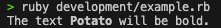
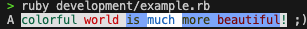

Class: ANSIStyleManager
- Inherits:
-
Object
- Object
- ANSIStyleManager
- Defined in:
- lib/utils/ansi_style_manager.rb
Overview
The ANSIStyleManager class is responsible for managing and applying ANSI styles to a given string.
It can replace tokens in the string with corresponding ANSI codes for colors, backgrounds and effects.
Effects
Effects can be used by adding <effect:effect_name> at the beginning and </effect> at the end of
the sequence of characters to which you want the effect to be applied.
Example:
manager = ANSIStyleManager.new('The text <effect:bold>Potato</effect> will be bold.')
puts manager
Output:

Below is the table with all available effects:
| Effect Name | Description |
|---|---|
| bold | set bold mode. |
| faint | set dim/faint mode. |
| italic | set italic mode. |
| underline | set underline mode. |
| blinking | set blinking mode. |
| inverse | set inverse/reverse mode. |
| hidden | set hidden/invisible mode. |
| strike | set strikethrough mode. |
| plain | set double underline mode. |
Note: Some terminals may not support some of the effects listed above.
Colors
The ANSIStyleManager supports 3 types of coloring: Named Colors, RGB Colors, or 256 Colors.
The foreground color can be changed by adding <color:color_type> at the beginning and </color>
at the end of the character sequence you want to color.
Example:
text = 'A <color:green>colorful <color:red>world <color:yellow>is <color:blue>much '
text += '</color>more </color>beautiful</color>!</color> ;)'
manager = ANSIStyleManager.new(text)
puts manager
Output:

It is also possible to set the background color of a text.
The background color can be changed by adding <color:color_type:color_type> at the
beginning and </color> at the end of the character sequence you want to color.
Example:
text = 'A <color:green:white>colorful <color:196>world <color:yellow:111>is <color:blue:255;255;255>much '
text += '</color>more </color>beautiful</color>!</color> ;)'
manager = ANSIStyleManager.new(text)
puts manager
Output:

Below is the table with all available color type patterns:
| Color Type | Pattern | Description |
|---|---|---|
| Reset colors | reset | Resets to the terminal's default color. |
| 256 Colors | number | Accepts numbers between 0 and 255. |
| RGB Colors | R;G;B | R, G, and B accept values between 0 and 255. |
| Named Colors | name | Accepts the following color names: black, red, green, yellow, blue, magenta, cyan and white. |
Instance Attribute Summary collapse
-
#string ⇒ String
readonly
The string to which ANSI styles will be applied.
Instance Method Summary collapse
-
#initialize(string) ⇒ ANSIStyleManager
constructor
Initializes a new instance of the ANSIStyleManager class.
-
#replace_all_tokens! ⇒ void
Replaces all color and effect tokens in the string with corresponding ANSI codes.
-
#replace_color_tokens! ⇒ void
Replaces all color tokens in the string with corresponding ANSI codes.
-
#replace_effect_tokens! ⇒ void
Replaces all effect tokens in the string with corresponding ANSI codes.
-
#to_s ⇒ String
Converts the string with all tokens replaced by corresponding ANSI codes.
Constructor Details
#initialize(string) ⇒ ANSIStyleManager
Initializes a new instance of the ANSIStyleManager class.
90 91 92 93 94 |
# File 'lib/utils/ansi_style_manager.rb', line 90 def initialize(string) raise 'Need initialize with a string' unless string.is_a?(String) @string = String.new(string) end |
Instance Attribute Details
#string ⇒ String (readonly)
Returns the string to which ANSI styles will be applied.
84 85 86 |
# File 'lib/utils/ansi_style_manager.rb', line 84 def string @string end |
Instance Method Details
#replace_all_tokens! ⇒ void
This method returns an undefined value.
Replaces all color and effect tokens in the string with corresponding ANSI codes.
99 100 101 102 |
# File 'lib/utils/ansi_style_manager.rb', line 99 def replace_all_tokens! replace_color_tokens! replace_effect_tokens! end |
#replace_color_tokens! ⇒ void
This method returns an undefined value.
Replaces all color tokens in the string with corresponding ANSI codes.
107 108 109 110 111 112 113 114 115 116 117 118 119 |
# File 'lib/utils/ansi_style_manager.rb', line 107 def replace_color_tokens! scan_while_find(CONSTANTS::ANSI::COLORS) do |value| colors = value.first.split(':') replace_tokens_with!( ansi_token: color_prefix(color: colors[0], background: colors[1]), ansi_reset_token: ANSI.new(%i[reset_background reset_color]), to_replace: "<color:#{value.first}>#{value.last}</color>", preserve_reset_token: false, text: value.last ) end end |
#replace_effect_tokens! ⇒ void
This method returns an undefined value.
Replaces all effect tokens in the string with corresponding ANSI codes.
124 125 126 127 128 129 130 131 132 133 134 |
# File 'lib/utils/ansi_style_manager.rb', line 124 def replace_effect_tokens! scan_while_find(CONSTANTS::ANSI::EFFECTS) do |value| replace_tokens_with!( ansi_reset_token: ANSI.new("remove_#{value.first.downcase}"), to_replace: "<effect:#{value.first}>#{value.last}</effect>", ansi_token: ANSI.new(value.first.downcase), preserve_reset_token: true, text: value.last ) end end |
#to_s ⇒ String
Converts the string with all tokens replaced by corresponding ANSI codes.
139 140 141 142 |
# File 'lib/utils/ansi_style_manager.rb', line 139 def to_s replace_all_tokens! @string end |